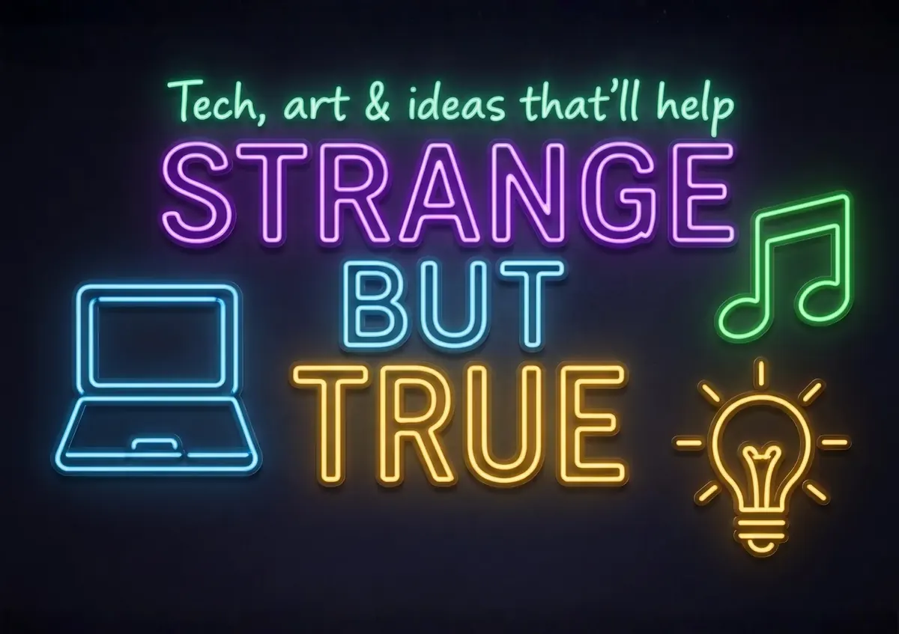

Films & Festivals
This is where the mystery becomes playable. The films and festivals are not a finished slate yet; they are invitations to build adventure formats where audiences can test maps, routes, choices, friendships and futures together.

Worldbuilding engine
Reality-TV energy, but pointed at better futures.
A future Cosmic Nexus festival could invite teams to pitch short films, myth-layer episodes, evidence maps, travel routes, sensorium demos and governance simulations. The fun can be public. The claims still need labels.
CYOA and AI alignment
Make the audience choose, then make the choice accountable.
The Choose-Your-Own-Adventure material turns AI alignment into story testing. Each branch can ask what a character knows, what they hide, who pays the cost, who gets invited, and how the community sees the result.
Comedy keeps the first contact human before the worldbuilding expands.
Alignment becomes self-honesty, consent and evidence rather than a machine lecture.
Worldbuilders compete to explain the future better, not just louder.
Global stories become interfaces for care, memory, maps and respect.
Festival format
A public season can have playful doors and serious back rooms.
The public might see screenings, travel quests, creator challenges, song and dance, coastal field trips and worldbuilding panels. Behind the scenes, the useful work is source trails, host safety, consent checks, legal memory, budget notes and clear next steps.